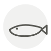

Hareng
Herring
| Nom latin | Clupea harengus |
|---|---|
| Famille | Poissons & fruits de mer |
| Origine | Atlantique Nord & Baltique |
| Saison | octobre – février |
| Goût | Riche · Salé · Iodé · Fumé |
| Prix courant | 5–9 €/kg |
Ce que c’est
Le poisson qui a bâti des villes. La Ligue hanséatique vivait du hareng salé, on dit qu’Amsterdam est bâtie sur ses arêtes, et la méthode d’un Néerlandais du XIVe siècle pour l’étêter en mer donna aux Pays-Bas deux siècles d’avance commerciale.
En cuisine
Fumé, salé ou mariné, il appelle un féculent et un acide à côté — pomme de terre et oignon, ou pomme et crème.
S’accorde avec
Pomme de terre Oignon Crème Pomme Aneth Vinaigre de cidre Farine de seigle Poivre noir
Même espèce
Hareng matjes Hareng saur Kazunoko (œufs de hareng) Laitance de hareng
Entre aussi avec
Huile de cameline Vitelotte Vinaigre de bière
De saison en même temps
Ajvar Germon (thon blanc) Homard américain (canadien) Trompette de la mort Bonite à ventre rayé Omble chevalier
Une erreur ici, ou un oubli ? Dites-le nous